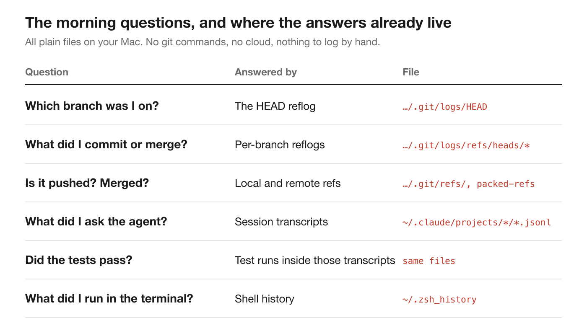
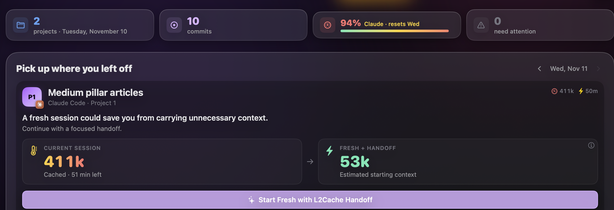

Most of us start the day rebuilding yesterday by hand. The answers are already sitting in plain files on your disk.
Picture 9:10 on a Tuesday. Coffee in one hand, trackpad in the other, you're trying to remember where you were.
Which branch were you on in the app repo? Did the agent finish the refactor you left it with at seven last night, or did it stop halfway and ask you something? Did the tests pass before you closed the lid? Is there a commit sitting on this laptop that never got pushed? And what did you actually do yesterday, because standup is in twenty minutes and "worked on stuff" won't cut it.
So you do the usual. git status in three repositories. Scroll back through the terminal. Reopen two agent sessions and skim the last screen of each. Open GitHub to check what's merged. By the time you've rebuilt yesterday, the first coffee is cold and you haven't written a line.
It was my routine too, and here's what eventually annoyed me enough to fix it: none of those questions need you to remember anything. Every answer is already written down, on your own disk, by tools you use all day. Nothing reads them.
Your Mac keeps a surprisingly complete diary of your working day. It isn't in one place, and none of it was designed for you to read, but it's there.

Git keeps a reflog for every branch. Every time a branch moves, because you committed, amended, merged or created it, git appends one line to a plain text file under .git/logs/refs/heads/: the old commit, the new one, a Unix timestamp and a short message like commit: fix login redirect or merge feature/search. Branch switches go to .git/logs/HEAD. Whether a branch is pushed or merged is in the refs next to it. That's "which branch was I on", "what did I commit" and "is it pushed" answered without running a single command.
Coding agents write a transcript of every session. Claude Code keeps each session as a JSONL file under ~/.claude/projects, one line per message, each with a timestamp and the folder the session ran in. Your prompts are there. So are the agent's replies, the commands it ran and the files it edited. When it ran your test suite, the output, including how many tests passed or failed, is in there too.
Your shell keeps a history. Every command you typed, in ~/.zsh_history. With one caveat, which I'll come to.
Put those three together and you have most of a developer's day: what you asked for, what got built, what got tested, what got committed and where it stands now.
Before building anything, I wanted to know whether the files really held enough to answer "what did I do yesterday?". So I wrote a small script that reads only those files, finds my last working day, and prints counts: no commit messages, prompts or commands, just numbers.
This is what it printed for my Tuesday:
Your last working day: Tuesday, November 10
L2Cache: agent prompts 57
L2Cache: agent sessions 4
L2Cache: commits 3
l2cache-site: commits 7
(Terminal skipped: your zsh history has no timestamps. Add `setopt EXTENDED_HISTORY` to ~/.zshrc.)Fifty-seven prompts across four agent sessions in the app, three commits there and seven on the website. I checked the commit counts against git log for the same day: three and seven. The reflogs had it exactly, and the script never ran git to get it.
What the counts can't show is intent. Fifty-seven prompts could be one hard bug or six small features; three commits could be a release or three typo fixes. The files know that I worked and where. They don't know what for. Hold that thought.
That last line is the interesting part. My shell history couldn't say what I did on Tuesday, because by default zsh doesn't record when a command ran. It also doesn't record which folder you were in, or whether the command succeeded. Plain shell history is a list of strings. That turned out to matter later.
The script was an afternoon. Turning it into a morning page I'd actually trust took a lot longer, and most of the work was in a handful of decisions. I think they apply to any tool that tries to tell you about your own work.
The obvious way to get git state is to run git: git log, git status, git branch -vv in every repository, every few minutes. I deliberately didn't. The app reads the reflogs and refs as files and never starts a git process or writes a byte to your repository. That means no lock files appearing mid-rebase and no surprise index.lock errors in your terminal. It also works inside the Mac App Store sandbox, where the only thing the app gets is read access to the folder you granted.
There's a bonus. Because each branch has its own reflog, every commit lands on the branch it was made on. You get "three commits on feature/search, one on main" without reconstructing the history from the commit graph.
This sounds trivial and isn't. If you open your laptop on Monday, "yesterday" is Sunday, and Sunday was empty. If you took Wednesday off, Thursday's "yesterday" is a blank page.
The rule I settled on: yesterday is the last day before today that has any activity. On Mondays, it's the whole of last week, Monday to Sunday. And the numbers don't change while you work today, so the morning summary stays a summary of the past, not a moving target.
It would have been easy to throw everything at a language model and ask it to "summarise my day". I didn't want my morning to start with a confident paragraph I'd have to fact-check.
So everything on the page comes from fixed rules you could check by hand. A branch needs attention when its last test run failed. It needs attention when it has commits that are a day old and not pushed. It needs attention when it was pushed but has sat unmerged for between three and thirty days. A branch untouched for thirty days is idle. Each item says why it's there, and you can dismiss it for a week.
The standup works the same way. Yesterday, Today, Blockers, built from commit subjects, merges and new branches, with AI switched off. If you do turn AI on, it can only rewrite the facts it's handed. It doesn't get to invent a productive Tuesday.
Raw evidence has a limit. Fifty-seven prompts and a list of edited files tell you that you worked; they don't say on what. The fix turned out to be asking the agent. At the end of every turn that changed files, the agent adds one invisible line to its reply: the feature, what changed, and the next step. Something like:
<!-- l2c: {"f":"Medium pillar articles","d":"First article drafted with sourced facts","n":"Review the draft"} -->The app keeps each note next to the file edits it recorded from the transcript, so the summary sits beside the evidence. Those notes are what turn "57 prompts" into "Medium pillar articles: first article drafted; next, review it".
The shell history problem from my script doesn't go away by wishing. Without timestamps, folders and exit codes, a command history can't be placed on a day or tied to a project. I ended up recording those myself, through an optional shell hook that logs the time, folder, branch and exit code of each command (it asks git for the branch name, in your own shell) and scrubs anything that looks like a token or password before it touches disk. The line is written when the command finishes, so the exit code is real: a command that failed in your terminal just before you stopped shows up the next morning as an open loop. The "last test run failed" alert comes from the agent's test runs, where the pass and fail counts are in the transcript.
If you're not ready for a hook, one line gets you timestamps for free:
setopt EXTENDED_HISTORY # add to ~/.zshrcAll of this ended up as the Today page in L2Cache, the Mac app I build. It's the first thing I see in the morning. It shows the work in progress, newest first, each with what I last asked the agent, the agent's last update and the latest commit. Beside it is the list of loose ends: the failing run, the unpushed commit, the branch waiting for review. Below are the other projects I touched this week. A Copy standup button writes Yesterday / Today / Blockers from the same facts.

None of it asked me to log anything. I didn't start a timer, write a journal or tag a single commit. It's built entirely from files that were already there.
You don't need my app to see how much your Mac already knows. Here's the script. It reads your git reflogs, your Claude Code transcripts and your zsh history, and prints counts for your last working day. It prints no commit messages, prompts or commands, and it never runs git.
"""What did I do yesterday? Rebuilt from files already on your Mac.
Reads git reflogs (no git commands), Claude Code transcripts and zsh history,
and prints counts only: no commit messages, prompts or commands.
Usage: python3 yesterday.py [projects folder] (default: ~/Developer)
"""
import functools
import glob
import json
import os
import sys
from collections import Counter, defaultdict
from datetime import date, datetime
ROOT = os.path.expanduser(sys.argv[1] if len(sys.argv) > 1 else "~/Developer")
activity = defaultdict(Counter) # day -> Counter of "project: what"
def day_of(epoch):
return datetime.fromtimestamp(epoch).date()
@functools.lru_cache(maxsize=None)
def repo_of(folder):
"""The repository a folder belongs to (nearest parent with a .git), so `app/docs` counts as `app`."""
path = folder
while path and path != os.path.dirname(path):
if os.path.exists(os.path.join(path, ".git")):
return os.path.basename(path)
path = os.path.dirname(path)
return os.path.basename(folder) or "?"
# 1. Git: every branch's reflog records commits, merges and new branches with a timestamp.
for git_dir in glob.glob(os.path.join(ROOT, "*", ".git")):
project = os.path.basename(os.path.dirname(git_dir))
for log in glob.glob(os.path.join(git_dir, "logs", "refs", "heads", "**"), recursive=True):
if not os.path.isfile(log):
continue
for line in open(log, errors="replace"):
head, _, message = line.partition("\t")
parts = head.split()
if len(parts) < 2:
continue
day = day_of(int(parts[-2]))
if message.startswith(("commit", "commit (amend)", "commit (initial)")):
activity[day][f"{project}: commits"] += 1
elif message.startswith("merge"):
activity[day][f"{project}: merges"] += 1
elif message.startswith("branch: Created"):
activity[day][f"{project}: new branches"] += 1
# 2. Claude Code: each transcript line has a timestamp; count sessions and prompts per day.
for path in glob.glob(os.path.expanduser("~/.claude/projects/*/*.jsonl")):
sessions = set()
for line in open(path, errors="replace"):
try:
row = json.loads(line)
except json.JSONDecodeError:
continue
text = (row.get("message") or {}).get("content")
# Typed prompts are plain strings; tool results and slash-command output are not.
# Compaction summaries are stored as user messages too, but nobody typed them.
if row.get("type") != "user" or not isinstance(text, str) or text.startswith("<"):
continue
if row.get("isMeta") or row.get("isCompactSummary") or text.startswith("[Request interrupted"):
continue
day = datetime.fromisoformat(row["timestamp"].replace("Z", "+00:00")).astimezone().date()
project = repo_of(row.get("cwd") or "")
activity[day][f"{project}: agent prompts"] += 1
if (day, project) not in sessions:
sessions.add((day, project))
activity[day][f"{project}: agent sessions"] += 1
# 3. zsh history (needs EXTENDED_HISTORY for timestamps): count commands per day.
history = os.path.expanduser("~/.zsh_history")
stamped = 0
if os.path.exists(history):
for line in open(history, errors="replace"):
if line.startswith(": ") and ":" in line[2:]:
try:
activity[day_of(int(line[2:].split(":", 1)[0]))]["terminal: commands"] += 1
stamped += 1
except ValueError:
pass
past = sorted(d for d in activity if d < date.today())
if not past:
sys.exit("No activity found before today.")
day = past[-1]
print(f"Your last working day: {day:%A, %B %d}\n")
for key, count in sorted(activity[day].items()):
print(f" {key:<40}{count:>5}")
if not stamped:
print("\n (Terminal skipped: your zsh history has no timestamps. Add `setopt EXTENDED_HISTORY` to ~/.zshrc.)")Save it as yesterday.py and point it at the folder that holds your repositories:
python3 yesterday.py ~/DeveloperIf the terminal line is missing, that's the timestamp gap. Turn on EXTENDED_HISTORY and tomorrow's run will include it.
The first half hour of the day shouldn't be archaeology. Everything you need to pick up where you left off is already written down. You just need something that reads it.
Read the files instead of running the tools, define "yesterday" properly, and prefer rules you can check over summaries you have to trust. Whether you build that yourself or use something ready-made, your mornings get the half hour back.
More on how the morning page is put together: Your morning starts with context, not archaeology. And on reading a project's history straight from git: See how your project got here.
L2Cache's Today page shows where each project was left, built from history already on your Mac.
Download L2Cache for Mac